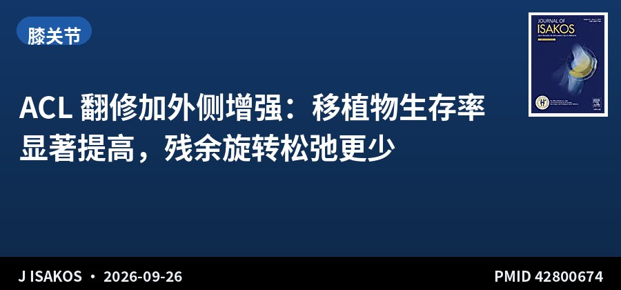

SPORTS MEDICINE & ARTHROSCOPY DIGEST
翻修 ACL 还怕再断？加做外侧增强，300 例数据说生存率更高
第 019 期 · 2026-10-04
中秋节（9/25）至今 9 天 · 10 本核心期刊新收录 66 篇 → 精选 30 篇
中秋节（9/25）到今天，攒了 9 天的文献，我筛出 30 篇值得看的，做成这期大综合。先看最扎心的一条：ACL 翻修本来就比初次失败率高，但加做外侧增强，300 例数据说移植物生存率能明显改善。
▍今日主打 · TODAY’S FOCUS

多中心队列 · III级证据 · 300例 · IPTW加权 Multicenter Cohort · Level III · 300 pts · IPTW
ACL 翻修加外侧增强：移植物生存率显著提高，残余旋转松弛更少
Lateral Extra-Articular Augmentation Is Associated With Improved Graft Survival After Revision Anterior Cruciate Ligament Reconstruction
J ISAKOS · 2026-09-26 · 三中心 300 例 · PMID 42800674
一句话结论：364 例首次单期翻修 ACLR 筛查，最终 300 例入组（单纯翻修 100、翻修 + LET 100、翻修 + ALL 重建 100），用逆概率治疗加权（IPTW）校正选择偏倚。外侧关节外增强（LET 或 ALL）与单纯翻修相比，移植物生存率显著更高、残余旋转松弛更少；LET 与 ALL 重建的直接比较为探索性分析。
要点：2015-01 至 2019-12 三个高流量膝关节中心连续病例，首次单期翻修 ACLR。以 IPTW 校正治疗分配偏倚，比较移植物生存、术后旋转松弛与患者报告结局，LET 与 ALL 重建的直接比较作为探索性终点。
对临床的启示：翻修 ACL 的失败率本就高于初次，而「翻修要不要加外侧增强」长期缺乏干净证据——因为做增强的患者往往本身风险更高。这篇用 IPTW 把选择偏倚压下去后，答案很清晰：外侧增强（无论 LET 还是 ALL）与更好的移植物生存、更少的旋转松弛相关。它和 017 期「后倾 ≥12° 加 LET 后不再是高危」、015 期 MacIntosh 髂胫束联合重建，串成同一条越来越完整的线索——前外侧结构，正在从「可选附加」变成「高危/翻修场景的常规配置」。局限是回顾性、观察性，且 LET vs ALL 谁更优仍无定论。
Conclusion: Of 364 screened first-time single-stage revision ACLRs, 300 were included (100 isolated, 100 +LET, 100 +ALL reconstruction), analyzed with inverse probability of treatment weighting. Lateral extra-articular augmentation (LET or ALL) was associated with significantly higher graft survival and less residual rotational laxity than isolated revision ACLR; the LET-versus-ALL comparison was exploratory.
Key points: Consecutive first-time single-stage revision ACLRs (2015–2019) at three high-volume centers; IPTW to adjust allocation bias; outcomes included graft survival, rotational laxity and PROMs, with LET-vs-ALL as an exploratory endpoint.
Clinical implications: Revision ACL already fails more than primary, and whether to add lateral augmentation has long lacked clean evidence—because augmented patients are typically higher-risk to begin with. After IPTW reduces that allocation bias, the answer is clear: lateral augmentation (LET or ALL) is associated with better graft survival and less rotational laxity. Together with Issue 017 (PTS ≥12° no longer high-risk with LET) and Issue 015 (MacIntosh ITB), a coherent thread emerges—the anterolateral structures are moving from 'optional add-on' to 'routine configuration' in high-risk/revision settings. Limitations: retrospective, observational, and LET-vs-ALL superiority remains unresolved.
原文 / Source：doi.org/10.1016/j.jisako.2026.101224
▍其余 29 篇 · 一屏看完
膝关节
BEAR 上市后 100 例 2 年随访：低再撕裂率
Two-Year Follow-Up of Postcommercialisation Cohort of 100 Bridge-Enhanced ACL Restorations Shows Low Retear Rate
100 例 BEAR（桥接增强 ACL 修复），2 年再撕裂率低、PROMs 良好，改良术式不良事件更少。
100 BEAR procedures at 2 years showed a low retear rate and good PROMs, with fewer adverse events after technique modification.
Knee Surg Sports Traumatol Arthrosc · PMID 42814471 · doi.org/10.1002/ksa.70606
膝关节
青少年 MPFL：自体 vs 异体，结局相当、自体并发症更少
Autograft MPFL Reconstruction Provides Comparable Outcomes and Failure Rates With Fewer Complications Versus Allograft in Adolescents
20 项研究 596 例青少年，自体与异体 MPFL 结局和失败率相当，但自体并发症更少。
Across 20 studies (596 adolescents), autograft and allograft MPFL had comparable outcomes/failure, but autograft had fewer complications.
Arthroscopy · PMID 42814618 · doi.org/10.1002/arj.70555
膝关节
半月板同种异体移植：运动员功能改善、高重返率，但并发症不低
Meniscal Allograft Transplantation in Athletes Offers Improved Function With High RTS Despite High Complication Rates
13 项研究 1021 例运动员，MAT 改善功能、重返运动率高，但并发症和翻修率偏高。
In 1021 athletes (13 studies), MAT improved function with high RTS, but complication and revision rates were high.
Arthroscopy · PMID 42791500 · doi.org/10.1002/arj.70592
膝关节
半月板后根修复：全内与拉出相当，但都纠正不了突出
All-Inside Medial Meniscus Root Repair Is Comparable to Tibial Pullout, but Both Fail to Correct Extrusion
全内 vs 经胫骨拉出功能改善相当，但两种术式术后半月板突出（extrusion）都未纠正。
All-inside and pullout root repair improved function comparably, but neither corrected postoperative meniscal extrusion.
Arthroscopy · PMID 42809375 · doi.org/10.1002/arj.70626
膝关节
ACL+MCL 合并伤：移植物选择不受 MCL 状态影响
ACL Graft Type Effects Were Not Modified by MCL Status in Combined ACL-MCL Injuries
722 例多中心注册研究，MCL 状态不改变移植物类型对结局的影响，腘绳肌取材不损内侧稳定。
In 722 registry patients, MCL status did not modify the graft-type effect on outcomes; hamstring harvest did not impair medial stability.
Am J Sports Med · PMID 42801272 · doi.org/10.1177/03635465261487325
髋关节
双侧髋关节镜（分期/同期）：结局与单侧相当
Staged and Simultaneous Bilateral Hip Arthroscopy Achieves Outcomes Comparable With Unilateral Surgery
10 项研究 1124 例双侧 vs 3118 例单侧，双侧（分期或同期）结局与单侧相当。
In 1124 bilateral vs 3118 unilateral cases (10 studies), bilateral hip arthroscopy (staged or simultaneous) matched unilateral outcomes.
Arthroscopy · PMID 42799974 · doi.org/10.1002/arj.70641
髋关节
髋盂唇重建：重返运动率中等（64–88%）
Labral Reconstruction of the Hip Provides Moderate Return to Sports
8 项研究 262 例，盂唇重建后 RTS 率 64–88%，PROs 改善，但重返同水平比例有限。
In 262 patients (8 studies), labral reconstruction achieved 64–88% RTS with improved PROs, but same-level return was limited.
Arthroscopy · PMID 42820456 · doi.org/10.1002/arj.70514
髋关节
髋关节镜 periportal 切开：边界/发育不良女性短期更优
Periportal Capsulotomy Shows Promising Short-Term Outcomes vs Interportal in Borderline/Dysplastic Women
62 例女性，periportal（保留关节囊）比 interportal 短期 PRO 改善更大、翻修更少。
In 62 women, capsular-sparing periportal capsulotomy showed greater short-term PRO gains and fewer revisions than interportal.
Arthroscopy · PMID 42791656 · doi.org/10.1002/arj.70634
肩关节
二头肌腱固定：等张 vs 低张，谁更优？
Isotension Versus Low-Tension Fixation in Arthroscopic Biceps Tenodesis
剪切波弹性成像评估张力，等张与低张固定的临床结局比较，张力策略或影响结果。
Using shear-wave elastography to assess tension, isotension vs low-tension fixation outcomes were compared—tension strategy may matter.
Am J Sports Med · PMID 42812042 · doi.org/10.1177/03635465261486095
肩关节
肩不稳的骨性形态：3D-CT 定量分析
Association Between Glenohumeral Bony Morphology and Anterior Shoulder Instability: 3D Analysis
210 例 3D-CT，患侧关节盂指数更大、肱骨头包容角更小，骨性形态与复发性不稳相关。
In 210 participants, the affected side had a greater glenoid index and smaller humeral containment angle, linking bony morphology to recurrent instability.
J Shoulder Elbow Surg · PMID 42822693 · doi.org/10.1016/j.jse.2026.09.013
肩关节
肩袖修复 2 年疼痛干扰：术前 ASES、合并症、抑郁是预测因素
Predictors of PROMIS Pain Interference Two Years After Arthroscopic Rotator Cuff Repair
203 例，术前 ASES 高、合并症少、抑郁低者 2 年疼痛干扰更小。
In 203 patients, higher preoperative ASES, lower comorbidity and lower depression predicted less 2-year pain interference.
J Shoulder Elbow Surg · PMID 42822691 · doi.org/10.1016/j.jse.2026.09.014
踝足
内踝应力骨折（篮球运动员）：钢板固定 12 周回归
Plate-Based Operative Management of Medial Malleolar Stress Fractures in High-Level Basketball Players
10 例高水平篮球运动员，抗剪切钢板固定全部愈合，9 例 12 周回归、中位 4 个月复赛。
In 10 high-level basketball players, shear-resisting plate fixation achieved universal union; 9 returned by 12 weeks, competitive play at a median 4 months.
Foot Ankle Int · PMID 42808558 · doi.org/10.1177/10711007261484949
踝足
跗骨窦腱鞘囊肿：关节镜切除技术
Endoscopic Resection of Sinus Tarsi Ganglion Extended to the Anterolateral Ankle
关节镜下经同一组入路切除跗骨窦腱鞘囊肿 + 清理跗骨窦，微创、恢复快、复发低。
Endoscopic ganglionectomy plus sinus-tarsi debridement through the same portals—minimally invasive, faster recovery, low recurrence.
Arthrosc Tech · PMID 42824062 · doi.org/10.1002/atn2.70307
运动防护
女运动员 REDs 风险：身体意象与进食障碍是心理前因
Body Image, Disordered Eating, and REDs Risk in Female Athletes
105 例女运动员，负面身体意象与 REDs 风险和进食障碍强相关，正面身体意象有保护作用。
In 105 female athletes, negative body image was strongly associated with REDs risk and disordered eating; positive body image was protective.
Sports Health · PMID 42806567 · doi.org/10.1177/19417381261486290
运动防护
ACL 重建后「重返表现」连续谱：足球运动员的过渡框架
A Return to Performance Continuum for Football Players After ACL Reconstruction
提出从「重返赛场」到「持续高水平表现」的结构化过渡框架，弥补康复与竞技的断层。
Proposes a structured continuum from return-to-play clearance to sustained performance, bridging rehabilitation and elite competition.
Sports Med · PMID 42814278 · doi.org/10.1007/s40279-026-02543-z
膝关节
MPFL 股骨侧固定：内收肌悬吊 vs 股骨隧道，结局相当
Adductor Sling and Anatomic Femoral Tunnel Fixation Both Yield High Functional Scores After MPFL Reconstruction
84 膝多中心回顾性，两种固定方式最终 Kujala、再脱位率、残余不稳相当。
In 84 knees, adductor-sling and anatomic-tunnel MPFL fixation yielded comparable Kujala scores, redislocation and residual instability.
J ISAKOS · PMID 42810622 · doi.org/10.1016/j.jisako.2026.101225
膝关节
卸载支具治膝骨关节炎：29 位专家共识
The Use of Unloader Bracing in the Management of Knee Osteoarthritis: A Modified Delphi Consensus
Delphi 共识（5 大洲 29 位专家），卸载支具可减少患侧间室负荷，指征与围手术期应用达成共识。
A 5-continent Delphi (29 experts) reached consensus that unloader bracing reduces ipsilateral compartment load, with defined indications and perioperative use.
Arthroscopy · PMID 42809374 · doi.org/10.1002/arj.70579
膝关节
运动学对线 TKA：满意度 94% 对机械对线 81%
Improved Function and Satisfaction With Kinematically Versus Mechanically Aligned TKA
622 例，运动学对线组总体满意度 94.0% vs 机械对线 81.1%，残余症状更少。
In 622 TKAs, kinematic alignment achieved 94.0% satisfaction vs 81.1% for mechanical, with fewer residual symptoms.
Knee Surg Sports Traumatol Arthrosc · PMID 42809367 · doi.org/10.1002/ksa.70621
膝关节
外侧半月板后根修复：残余突出不影响 2 年结局
Residual Meniscal Extrusion Was Not Associated With 2-Year Outcomes After Posterior Lateral Meniscus Root Repair
30 例（28 例合并 ACLR），经胫骨拉出修复后残余半月板突出与 2 年 Lysholm 无显著相关。
In 30 cases (28 with concomitant ACLR), residual extrusion after pull-out repair was not associated with 2-year Lysholm.
J ISAKOS · PMID 42815772 · doi.org/10.1016/j.jisako.2026.101229
髋关节
髋关节镜麻醉：神经轴与全麻短期结局相当
Short-Term Outcomes Are Similar for Neuraxial Versus General Anesthesia for Hip Arthroscopy
159 髋，神经轴麻醉与全麻的并发症、翻修率、PROs 均相当。
In 159 hips, neuraxial and general anesthesia had comparable complications, revision rates and PROs.
Arthroscopy · PMID 42791614 · doi.org/10.1002/arj.70603
髋关节
髋关节镜会阴柱牵引：阴部神经麻痹发生率与危险因素
Incidence of Postoperative Pudendal Nerve Palsy and Its Relationship to Table Traction During Hip Arthroscopy
93 例，传感器记录牵引力/时长，揭示会阴柱牵引相关阴部神经麻痹的发生率与持续时间。
In 93 patients with sensor-measured traction, the incidence and duration of perineal-post-related pudendal nerve palsy were characterized.
Am J Sports Med · PMID 42813241 · doi.org/10.1177/03635465261485701
肩关节
上关节囊重建：肱二头肌长头腱改道（无结锚钉）
Arthroscopic Superior Capsular Reconstruction With Long-Head Biceps Tendon Rerouting Using Knotless Anchors
用 LHB 改道重建上关节囊，无结锚钉固定，快速、省骨、便于后方肩袖整合。
LHB rerouting for SCR with knotless anchors—fast, bone-preserving fixation that eases posterior cuff incorporation.
Arthrosc Tech · PMID 42807743 · doi.org/10.1002/atn2.70302
肩关节
部分肩袖撕裂：无锚钉边缘会聚修复
Marginal Convergence Repair Technique for Partial Articular-Sided Rotator Cuff Tears
无需锚钉的边缘会聚技术，适用于纵行/水平/复合型部分撕裂，保留足印区、降低成本。
Anchor-free margin-convergence repair for partial tears (longitudinal/horizontal/complex), preserving footprint and cutting cost.
Arthrosc Tech · PMID 42799192 · doi.org/10.1002/atn2.70240
肩关节
改良 Remplissage：减少软组织卡压
Arthroscopic Rotator Cuff Remplissage Technique to Limit Soft Tissue Interposition
经单一后入路 + 外侧辅助入路直视下过线，减少肩峰下盲穿、降低软组织卡压。
Simplified Remplissage with direct visualization via a posterior + lateral accessory portal, minimizing soft-tissue interposition.
Arthrosc Tech · PMID 42819080 · doi.org/10.1002/atn2.70268
肩关节
肩袖修复增强：enthesis 间置同种异体 + 自体肩峰下囊
Augmentation of Rotator Cuff Repair Using Enthesis Interpositional Allograft and Minced Autologous Subacromial Bursa
间置双相异体移植物 + 自体肩峰下滑囊碎屑联合增强，兼顾支架与生物学。
Interpositional biphasic allograft combined with minced autologous subacromial bursa—scaffold plus biologic augmentation.
Arthrosc Tech · PMID 42819976 · doi.org/10.1002/atn2.70273
肩关节
肱骨远端骨折翻修：感染/机械/功能三类失败机制
Failure Patterns Leading to Revision After Distal Humerus Fracture Fixation: A Multicenter Study
491 例多中心翻修，失败归为感染、机械、功能三条通路，各有独立危险因素。
In 491 multicenter revisions, failures followed infectious, mechanical and functional pathways, each with distinct risk factors.
J Shoulder Elbow Surg · PMID 42822694 · doi.org/10.1016/j.jse.2026.09.012
肩关节
老年肱骨髁上骨折：内侧柱螺钉安全直径 6.4mm
A Safe Medial Column Screw Strategy for Transcondylar Humerus Fractures in the Elderly
92 例 CT 分析，内侧柱螺钉平均安全直径 6.4mm，96.2% 的 ≥65 岁肱骨可容纳。
In 92 CT-based humeri, mean safe medial-column screw diameter was 6.4 mm; 96.2% of ≥65-y humeri accommodated it.
J Shoulder Elbow Surg · PMID 42822690 · doi.org/10.1016/j.jse.2026.09.010
运动防护
MLB 投球时钟：损伤分布与恢复时长的变化
Pitch Clock Implementation and Its Differential Associations With Injury Distribution and Recovery Duration
1086 例上肢损伤，投球时钟实施后恢复时长延长、肘部损伤占比升高。
In 1086 upper-extremity injuries, post-clock recovery was longer and elbow injuries comprised a greater share.
Sports Health · PMID 42817176 · doi.org/10.1177/19417381261486293
运动防护
髌骨软化：肌筋膜松解 vs 干针（RCT）
Myofascial Release Versus Dry Needling for Chondromalacia in Adult Females: A Randomized Controlled Trial
45 例女性 RCT，肌筋膜松解 + 运动与干针 + 运动均减痛、改善股四头肌功能。
In a 45-woman RCT, both myofascial release and dry needling plus exercise reduced pain and improved quadriceps function.
Sports Health · PMID 42801270 · doi.org/10.1177/19417381261486230
💬 一起聊聊：中秋到现在这 15 篇里，哪一篇最颠覆你的认知？评论区说说。
关于本栏目：每日定时检索 10 本运动医学核心期刊前一日新收录文献，每日聚焦 1 篇值得深读的 + 其余精简速览，AI 辅助生成中英双语精要。
声明：本内容由 AI 辅助整理，仅供学术交流参考，观点与数据请以原文为准，不构成诊疗建议。文献题录与摘要来源：PubMed。
— 运动医学 · 关节镜文献速览 · 第 019 期 —